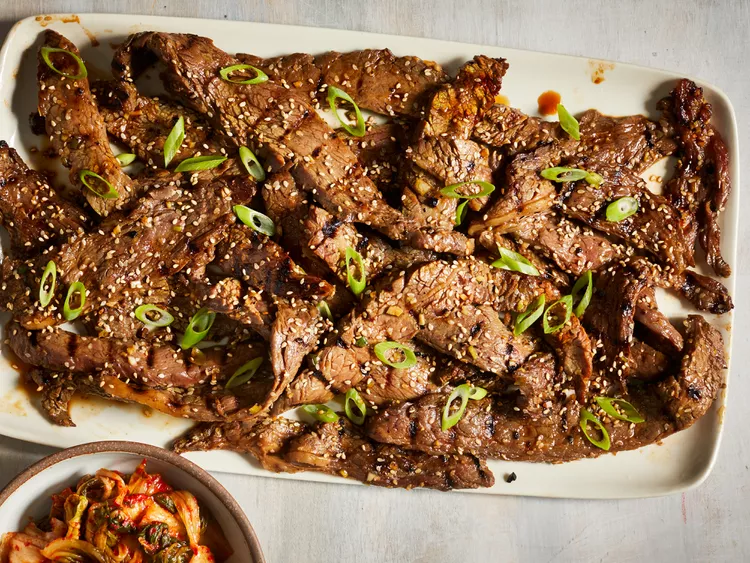

Korean Beef Bulgogi Bowls

Description
Korean Beef Bulgogi is a savory and slightly sweet dish made with thinly sliced ribeye marinated in a blend of soy sauce, brown sugar, sesame oil, garlic, ginger, and green onions.
It's typically stir-fried and served over rice with a variety of toppings like kimchi, sesame seeds, and a fried egg.
The gochujang (Korean chili paste) adds a spicy kick, making this dish a flavorful and satisfying meal.
Ingredients
- Thinly sliced ribeye
- soy sauce
- brown sugar
- sesame oil
- garlic
- ginger
- green onions
- gochujang (Korean chili paste)
- rice
- optional toppings (kimchi, sesame seeds, fried egg)
Instructions
- Marinate beef in a mixture of soy sauce, brown sugar, sesame oil, garlic, ginger, and green onions.
- Cook rice according to package directions.
- Stir-fry marinated beef until cooked through.
- Add gochujang to taste for desired spiciness.
- Serve beef over rice with desired toppings.